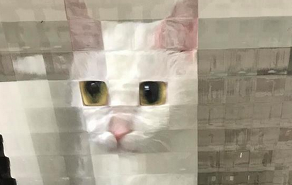
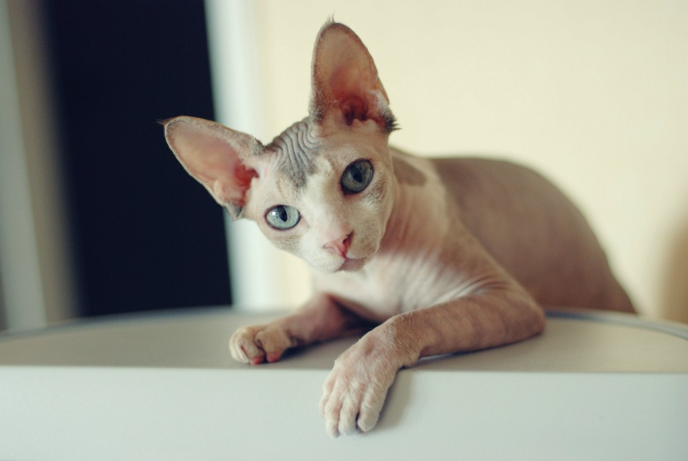
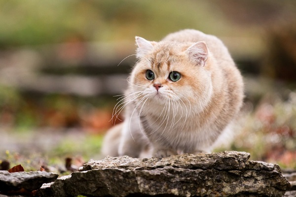
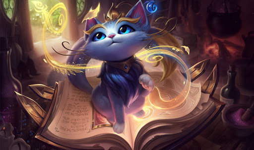
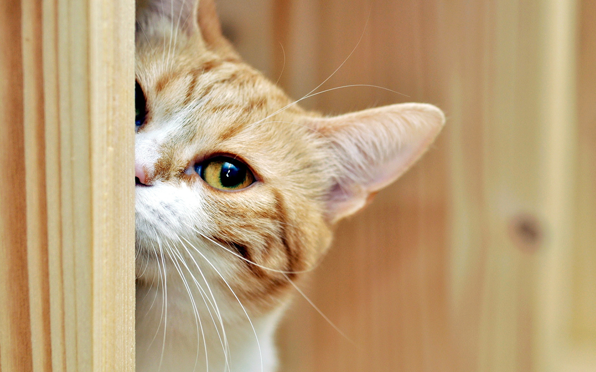
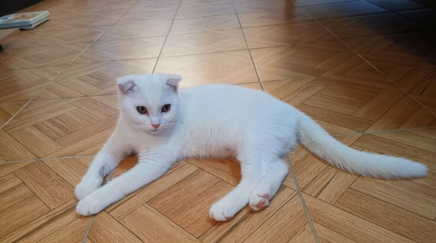
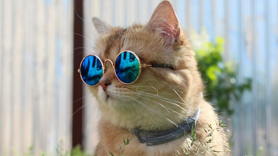
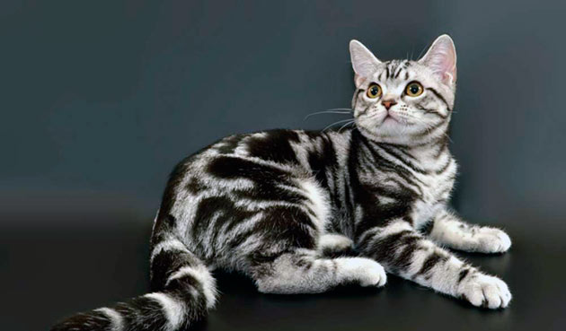
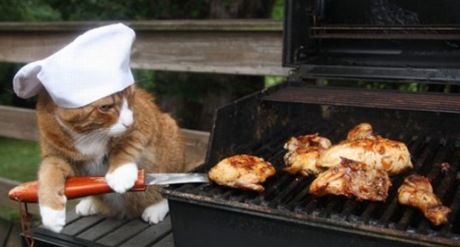

заглушка

Феня
- Возраст: Олд
- Порода: Пиксельная
- Болезни: нет
- Статут: ищет хозяина
Феня котик редкой пиксельной породы. Характер спокойный и тихий, но его вид вызывает ностальгию по временам 8-ми битных игр. Феня любит бегать по дому, аркадные автоматы, настолки и старое аниме. Это один из тех котиков, который не будет вам мешать играть в любимые игры, а при желании его можно будет попросить доиграть за вас, если вам вдруг нужно встать в AFK

Фараон
- Возраст: 3 года
- Порода: Сфинкс
- Болезни: Лысый
- Статут: ищет хозяина
Фараон под стать своему имени любит властвовать. Но он далеко не тиран, а очень хороший правитель. Любит чистоту и когда все вещи на своих местах. Если у вас есть еще животные, то Фараон с ними подружится и будет следить за их поведением

Стесняш
- Возраст: 3 месяца
- Порода: Британская короткошерстная
- Болезни: нет
- Статут: ищет хозяина
Стесняш еще маленький и глупенький, поэтому стесняется фотографироваться. На фото его сестра Паула
Паула
- Возраст: 3 месяца
- Порода: Британская короткошерстная
- Болезни: нет
- Статут: ищет хозяина
Паула полная противоположность своего брата. Она очень общительная и любить фоткаться. Обижается, когда кто-то приходит в гости и не играет с ней. Паулу нельзя разделять со своим братом Стесняшем, поэтому они идут в паре и создают балланс, которого нам так не хватает

Юми
- Возраст: У магических кошек такое не спрашивают
- Порода: Магическая
- Болезни: нет
- Статут: ищет хозяику
Юми это волшебная кошка. Ее любимое занятие летать на своей книге и играть в прятки с хозяйкой. Юми очень разговорчива. Серьезно, она умеет разговаривать. Юми отличный выбор для тех, кто хочет немного поразвлекаться

SCP-4 лапки. Наблюдатель
- [TOP SECRET]
- [TOP SECRET]
- [TOP SECRET]
- [TOP SECRET]
Класс объекта расценивается как безопасный. SCP-4 Лапки - общее обозначение данное целой группе объектов. В настоящее время SCP-4 лапки. Наблюдатель находится в ██████████. Сотрудниками фонда была выявлена особенность данного объекта: ██████████. Объект любит ██████████████████. Ведет себя странно при ███████. SCP-4 лапки. Наблюдатель подойдет любителям мистики и тайн.

Олег
- Возраст: 2 года
- Порода: Нет
- Болезни: Нет
- Статус: ещет хозяина
Просто Олег.

Сальватор
- Возраст: 1.2 года
- Порода: Крутая
- Болезни: Нет
- Статус: ещет хозяина
Сальватор крутой кот, который не расстается со своими не менее крутыми очками. Станет главным украшением и гостем вашей вечеринки. У Сальватора боевой характер. Он не даст ни себя ни вас в обиду. Так же он дюбит двигать головой под такт музыки. Можете звать его Крутой

Муся
- Возраст: 1 год
- Порода: Американская короткошерстная
- Болезни: Немного хромает на одну лапку
- Статус: ищет хозяина
Муся очень нежная и добра кошка. Но ей нужно время, чтобы к вам привыкнуть и начать доверять, после этого вы получите самую ласковую и милую кошку. Если вы человек со стрессом, то муся поможет его снять.

Шеф
- Возраст: 1 год
- Порода: Нет
- Болезни: Безграничная любовь к еде
- Статус: ищет хозяина
Именем шеф все сказано. Характер привередливый(особенно к еде) и разговорчивый. Его прелесть в том, что он умеет готовить себе сам. Если вы его не покормите, то он не пропадет, но в таком случае готовьтесь к войне. Котик отлично подойдет людям, которые хотят поесть в приятной компании